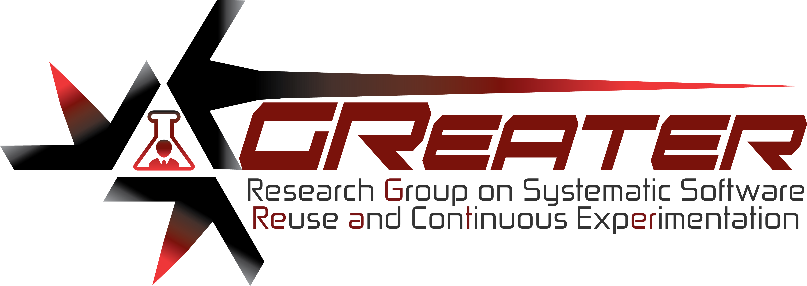
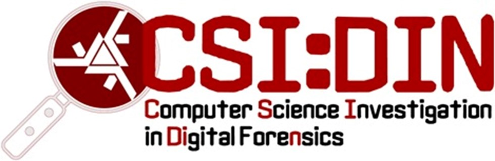

Research Interests
- Software Reuse with Software Product Lines; Variabliity Management; Model-driven Engineering; UML and Metamodeling; and Software Process Lines;
- Software Architecture, Reference Architectures, and Evaluation;
- Software Quality, Metrics and Meaures;
- Software Engineering Controlled Experiments, registered reports, ontologies, and education;
- Education in Software Engineering;
- Open Science for Software Engineering Research: preservation, provenance, curation, transparency; and research integrity;
- Evidence-based Digital Forensics and Controlled Experimentation;
- Reference Architectures for Digital Forensics Tools;
- Digital Forensics Feminicide Perspective;
- Digital Forensics Education and Training;
- Open Science for Digital Forensics Research;
- Open Science Education and Training.
Research Groups


Current Research Projects
Open Science Practices for the Evolution of Software Engineering Research and Practice
This project aims at investigating and applying open science practices to favoring the evolution of several aspects of software engineering studies, such as increasing reproducibliity, transparency, and reliabliity.
As today's software impacts society directly, software engineering research and practice should scientifically evolve as a science, from which produced artifacts (outputs) from research and practice are widely open. Therefore, collaborativelly evoling the area is a must as crosscutting area for all sciences. By doing this, we impact the main sustainable development goals of the United Nations and UNESCO. We then strongly believe in better software, better society!
The main objectives of this project are:
- investigate open science practices that lead software engineering empirical studies to be reproducible, transparent, and reliable;
- determine what open science practices are sustainable for a better software research;
- define a research and education agenda for open science in the context of software engineering;
- introduce open science as a fundamental course, initially, to graduate students;
- define registered reports and templates for software engineering experiments;
- provide a platform/portal for conducting software engineering experiments supporting open science practices and reproducibility;
- start an institutional (UEM's) initiave on open science to all research areas;
- form open science advocators to spread the word.
We have currently involved to this project: 4 Ph.D. candidates, 2 Master's students, and 2 undergrad students.